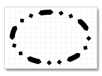

This topic describes how to draw a basic shape. The ID2D1RenderTarget interface provides methods for outlining and filling ellipses, rectangles, and lines. The following examples show how to create and draw an ellipse.
This topic contains the following sections:
To draw the outline of an ellipse, you define a brush (such as a ID2D1SolidColorBrush or ID2D1LinearGradientBrush) for painting the outline and a D2D1_ELLIPSE for describing the ellipse's position and dimensions, then pass these objects to the ID2D1RenderTarget::DrawEllipse method. The following example creates a black solid color brush and stores it in the m_spBlackBrush class member.
hr = m_pRenderTarget->CreateSolidColorBrush(
D2D1::ColorF(D2D1::ColorF::Black),
&m_pBlackBrush
);
The next example defines an D2D1_ELLIPSE and uses it with the brush defined in the previous example to draw the outline of an ellipse. This example produces the output shown in the following illustration.
D2D1_ELLIPSE ellipse = D2D1::Ellipse(
D2D1::Point2F(100.f, 100.f),
75.f,
50.f
);
m_pRenderTarget->DrawEllipse(ellipse, m_pBlackBrush, 10.f);
The preceding example used a plain stroke. You can modify the look of a stroke in several ways by creating an ID2D1StrokeStyle. The ID2D1StrokeStyle lets you specify the shape at the beginning and end of a stroke, whether it has a dash pattern, and so on. The following example creates an ID2D1StrokeStyle that describes a dashed stroke. This example uses a predefined dash pattern, D2D1_DASH_STYLE_DASH_DOT_DOT, but you can also specify your own.
D2D1_STROKE_STYLE_PROPERTIES strokeStyleProperties = D2D1::StrokeStyleProperties(
D2D1_CAP_STYLE_FLAT, // The start cap.
D2D1_CAP_STYLE_FLAT, // The end cap.
D2D1_CAP_STYLE_TRIANGLE, // The dash cap.
D2D1_LINE_JOIN_MITER, // The line join.
10.0f, // The miter limit.
D2D1_DASH_STYLE_DASH_DOT_DOT, // The dash style.
0.0f // The dash offset.
);
hr = m_pDirect2dFactory->CreateStrokeStyle(strokeStyleProperties, NULL, 0, &m_pStrokeStyle);
The next example uses the stroke style with the DrawEllipse method. This example produces the output shown in the following illustration.

m_pRenderTarget->DrawEllipse(ellipse, m_pBlackBrush, 10.f, m_pStrokeStyle);
To paint the interior of an ellipse, you use the FillEllipse method. The following example uses the DrawEllipse method to outline the ellipse, then uses the FillEllipse method to paint its interior. This example produces the output shown in the following illustration.

m_pRenderTarget->DrawEllipse(ellipse, m_pBlackBrush, 10.f, m_pStrokeStyle);
m_pRenderTarget->FillEllipse(ellipse, m_pSilverBrush);
The next example fills the ellipse first, then draws its outline. This example produces the output shown in the following illustration.
m_pRenderTarget->FillEllipse(ellipse, m_pSilverBrush);
m_pRenderTarget->DrawEllipse(ellipse, m_pBlackBrush, 10.f, m_pStrokeStyle);
Code has been omitted from these examples.
To draw more complex shapes, you define ID2D1Geometry objects and use them with the DrawGeometry and FillGeometry methods. For more information, see the Geometries Overview.
Â
Â